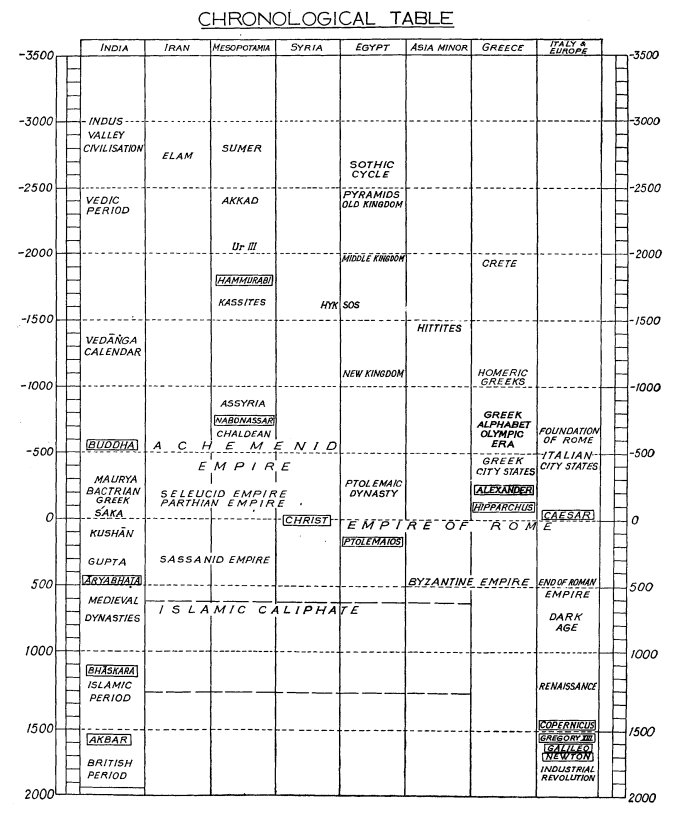

BY Prof. M. N. SAHA, D. SC., F. R. S. Professor Emeritus, University of Calcutta, Chairman, Calendar Reform Committee, AND Sri N. C. LAHIRI, M. A. Secretary, Calendar Reform Committee.  Chronology YV.